Course overview and motivation
This work is licensed under a Creative Commons Attribution 4.0 International License.
Learning objectives
After this lecture, you should be able to:
- explain why fluid mechanics and machine learning complement each other, identify common types of flow data, and describe the roles of domain knowledge, mathematics, and computer science;
- distinguish regression, classification, dimensionality reduction, clustering, and reinforcement learning using fluid-mechanical examples;
- identify features, targets, and samples in supervised learning, and states, actions, policies, and rewards in reinforcement learning;
- explain how reduced representations can retain useful information, how information loss affects a task, and why predictive accuracy does not automatically provide physical understanding;
- decompose an application into subproblems and outline how learning methods can be combined with analytical and numerical techniques;
- identify challenges involving data quality, generalization, computational cost, and physical reliability, and propose meaningful checks for an application;
- describe the extract–learn–use workflows and distinguish analysis, model integration, transfer across scales, and feedback loops.
Why do machine learning and fluid mechanics complement each other?
Fluid mechanics provides data and questions about fluid motion. Machine learning provides methods for learning from those data. The two fields meet both when we analyze a flow and when we build a model of it.
| Fluid mechanics | Machine learning |
|---|---|
| Experiments and simulations produce complex data. They generate large volumes of data, often with high spatial and temporal resolution. Three-dimensional, time-dependent flow fields are particularly difficult to analyze and turn into physical understanding. | Machine learning finds patterns in complex data. It is the science of making computers learn from data rather than explicitly programming every rule. Its methods can identify relationships and structure in high-dimensional datasets. |
| Fluid mechanics requires data for models. Parameters in material models are fitted to reference data. Turbulence models in CFD require calibration against high-fidelity experiments or simulations. | Machine learning creates useful representations of data. Learned models can represent relationships between quantities, estimate model parameters, and make predictions for inputs for which measurements or simulations are unavailable. |
How large can flow datasets become?
The following examples from direct numerical simulations of turbulent flow give an idea of the storage required for a single flow snapshot. A time-resolved dataset contains many such snapshots.
| Year | Source | Approximate snapshot size |
|---|---|---|
| 1987 | J. Kim, P. Moin, R. D. Moser | ~30 MB |
| 1999 | R. D. Moser, J. Kim, N. N. Mansour | ~290 MB |
| 2015 | M. Lee, R. D. Moser | ~900 GB |
| 2025 | P. K. Yeung et al. | ~500 TB |
The first three illustrative estimates come from turbulent channel-flow simulations; the fourth comes from a simulation of isotropic turbulence. Storage depends on the spatial resolution, the number of stored fields, numerical precision, and file format; the values are not the sizes of the complete datasets.
What makes a pattern useful?
A pattern may be a relationship between variables, a recurring spatial structure, or a compact representation of many measurements. Finding a pattern does not automatically provide physical understanding: we still need to ask what it represents and whether it helps answer our question.
Some algorithms learn representations that predict efficiently and accurately but are difficult for humans to interpret. Others seek patterns that are easier to understand, such as a few dominant flow structures or a simple relationship between physical quantities. Which approach is preferable depends on the task: predicting a force and explaining a flow mechanism can place different demands on a model.
From complex flow fields to physical understanding
Direct numerical simulation (DNS) resolves the spatial and temporal scales of turbulent motion and can provide detailed reference data for models that represent unresolved turbulence. Large-eddy simulations and Reynolds-averaged simulations also produce flow fields that require systematic analysis. Visual inspection alone rarely reveals all the useful relationships in a large, time-dependent dataset.
A useful representation can be much simpler than the flow itself. For example, the mean streamwise velocity in a turbulent wall-bounded flow follows an approximately logarithmic profile within the logarithmic region, despite the complexity of the instantaneous motion. This illustrates the kind of compact physical relationship we seek; it is not itself a result of machine learning.
Such understanding can guide engineering decisions. A model of shock-induced buffet on an airfoil may help identify ways to reduce unsteady loads. In other applications, understanding a flow mechanism may help enhance a desired effect, such as heat transfer through buoyancy-driven convection. Machine learning can help extract candidate structures or relationships, whose physical meaning must then be examined.
From reference data to fluid-mechanical models
Fluid-mechanical models need information from observations. Even a simulation of a Newtonian fluid requires material properties such as viscosity. Additional physical and turbulence models introduce closure relations and parameters that must be calibrated and validated against suitable reference data.
Initial and boundary conditions also matter. Experimental measurements or high-fidelity simulations can help describe realistic inflow conditions, for example. These data may be noisy, incomplete, or too large to use directly during a simulation. Machine learning can provide compact representations that are easier to evaluate and incorporate into a model. The representation must retain the information relevant to the application, and its effect on the simulation must be checked.
What data are relevant in fluid mechanics?
We have used the term data without specifying what it includes. Common datasets in fluid mechanics fall into three broad groups.
Snapshots of the flow state
A snapshot records the flow state at a particular time instance. In a numerical simulation, it is the discrete solution at that time; an experiment may provide measurements of part of the state. Typical quantities include velocity, pressure, temperature, and other fields relevant to the problem. Collecting snapshots at different times gives a time-resolved dataset.
Snapshots may cover the entire volume or only a subvolume. We may also record or analyze values on boundaries or on slices through the domain. A dataset can therefore contain a complete flow state or only selected quantities and locations.
Derived quantities
We can compute additional quantities from instantaneous flow fields:
- Averages, such as time-averaged velocity fields or spatially averaged temperatures.
- Integral quantities, such as forces and force coefficients obtained by integrating surface stresses.
- Differences between locations or regions, such as pressure losses or temperature differences between inlet and outlet.
- Derivatives and quantities based on them, such as vorticity, the curl of the velocity vector: \(\boldsymbol{\omega}=\nabla\times\mathbf{u}\).
These quantities often emphasize information relevant to a particular question. For example, analyzing or visualizing vorticity can help identify rotational structures in a flow, while force coefficients summarize the loading on a body.
Secondary data: how a simulation behaves
Data about the numerical process can be useful too. Examples include log-file messages, residuals of linear solvers and pressure–velocity coupling iterations, numerical settings, iteration counts, and execution times.
Such data help investigate why a simulation converges or fails, why one setup runs faster than another, or why a calculation crashes. Comparing them across runs can reveal relationships between settings, computational cost, and robustness. Solver residuals describe numerical convergence; they do not by themselves establish the physical accuracy of the flow solution.
What is required to combine machine learning and fluid mechanics?
Combining the two fields requires knowledge from three disciplines. Their overlap lets us formulate meaningful questions, choose suitable learning methods, and work efficiently with flow data.
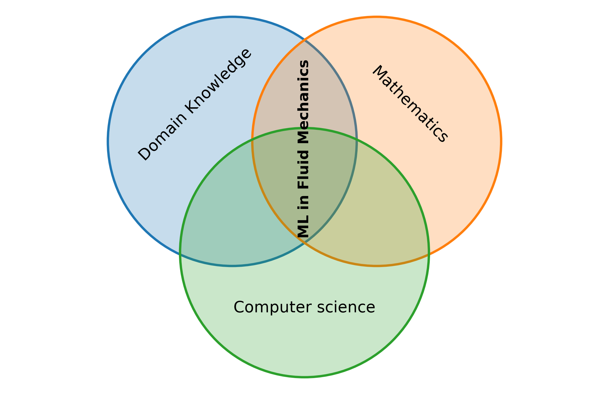
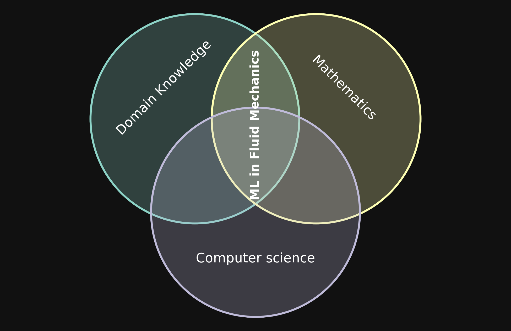
The overlaps are conceptual; the circle sizes do not represent quantitative shares.
The table gives only a few representative examples relevant to this course; it could be extended considerably.
| Discipline | Examples and their role |
|---|---|
| Domain knowledge | Domain knowledge includes fundamental fluid-mechanical relationships, numerical techniques, and measurement techniques. It is essential for interpreting data from simulations and experiments, recognizing their limitations, and using them meaningfully in machine learning. |
| Mathematics | Linear algebra provides tools for modal analysis (finding understandable patterns). Probability theory provides a foundation for deriving probabilistic models. Optimization allows us to fit models and solve design or control problems. |
| Computer science | Computer science provides efficient algorithms, high-performance and parallel computing methods, data structures, and data-processing techniques. These tools allow us to handle the large datasets illustrated above within the available memory, storage, and computing resources. |
Data handling should be planned early, ideally before a simulation begins. Decide which quantities and locations to record, how frequently to store them, and which processing can be performed while the simulation runs. These choices affect both the cost of handling the data and the questions we can answer afterwards.
Types of problems that ML solves
Solving problems in fluid mechanics involves physical, mathematical, and numerical modeling. Machine learning can address particular subproblems when suitable data are available or can be generated. The following categories provide a useful starting point for identifying the learning tasks within an application.
Supervised learning
In supervised learning, we learn a mapping from inputs to outputs using examples for which both are known. The input variables are called features, and the output variable we want to predict is called the target. Each sample, or training example, contains feature values and a corresponding target value, often called a label. The term label is especially common in classification; in regression, we usually refer to a target value. Two common supervised-learning tasks are regression and classification.
Regression
Regression predicts a continuous quantity from one or more features. For example, we may predict the force on a bluff body based on the Reynolds number. In the sketch below, we represent the drag force through its dimensionless drag coefficient. The Reynolds number is the feature and the drag coefficient is the target. A training example might pair a feature value of \(\mathrm{Re}=500\) with a target value of \(c_D=1.2\).
The sketch below shows observations and a regression model that represents their relationship. Once fitted, the model can predict a drag coefficient at Reynolds numbers between the observations. These predictions still require validation.
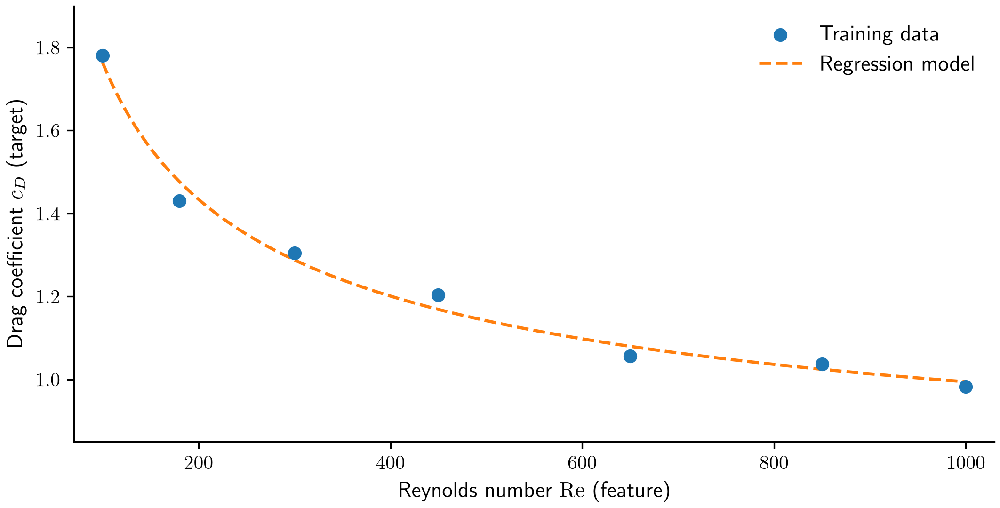
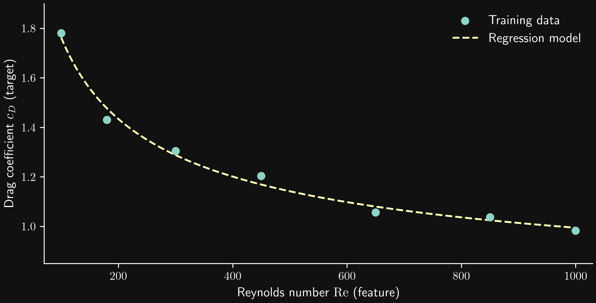
This is an illustrative example with synthetic data, not a validated drag correlation.
Classification
Classification predicts a category or discrete output from one or more features. For example, we may classify a flow as laminar or turbulent using its Reynolds number and angle of attack. Here, the two input quantities are the features, and the flow regime is the target. Each training example pairs specific Reynolds-number and angle-of-attack values with a class label, such as laminar or turbulent.
A classifier learns a rule for assigning a category to a feature combination. In the sketch below, a decision boundary separates the two predicted categories in feature space. The background shading shows the model prediction, while the marker shapes and colors show the observed class labels. Some observations lie in the region predicted for the other class, illustrating that the model does not classify every sample correctly. Unlike regression, the target is a category rather than a continuous value, although a classifier may also estimate the probability of each category.
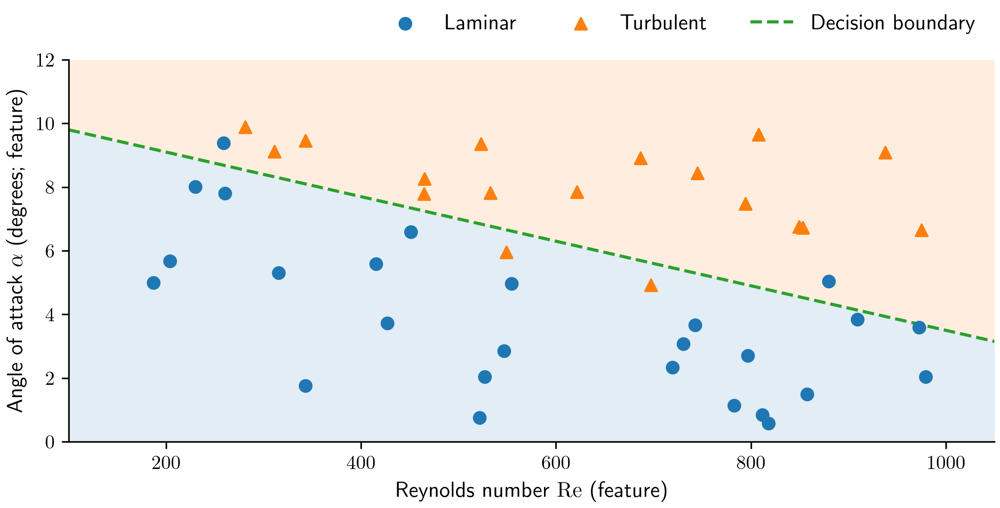
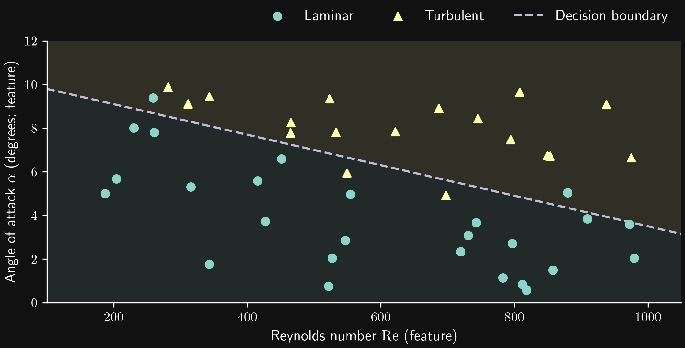
The points and boundary are schematic. Actual transition depends on the geometry, disturbances, and other flow conditions; the line is not a physical transition criterion.
Unsupervised learning
In unsupervised learning, we seek structure in a dataset without providing target values or class labels for the training examples. Two common tasks are dimensionality reduction and clustering.
Dimensionality reduction
Dimensionality reduction represents data using fewer variables while retaining the information relevant to the task. A suitable coordinate transformation can reveal that much of the variation occurs along only a few directions.
Consider two probes measuring the streamwise velocity at different locations. At each sampling time, the measured values \(U_1\) and \(U_2\) form one point in a two-dimensional dataset. Suppose the measurements roughly follow a linear trend: when one probe records a higher velocity, the other usually does too.
We can center the dataset by subtracting the mean probe values and rotate the coordinate system to align its first axis with the direction of greatest variance. The transformed coordinates \(U'_1\) and \(U'_2\) are the principal-component coordinates. We will define principal components precisely later in the course.
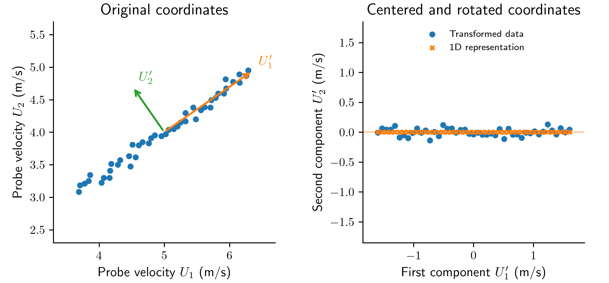
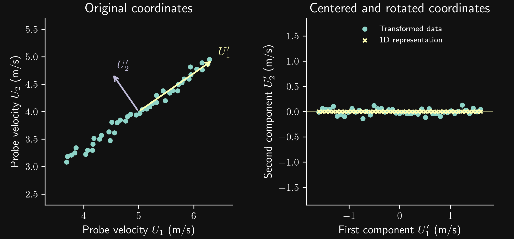
In the transformed coordinates, the variance along \(U'_2\) is small compared with that along \(U'_1\). We may therefore discard \(U'_2\) and describe each sample using only \(U'_1\). The crosses show this one-dimensional representation; the short connecting lines show the discarded component. We have reduced the number of describing variables from two to one, with a small loss of information in this example.
The rotation itself does not discard information; the reduction occurs when we omit the second coordinate. Whether its small variance makes it safe to discard depends on the task: even a small fluctuation can be physically important. However, fluctuations may also arise from experimental measurement noise. If the discarded component mainly represents such noise, removing it can improve the data quality.
Clustering
Clustering groups samples according to their similarity without requiring predefined class labels. We choose how to represent each sample and how to measure similarity; a clustering method then seeks groups within that representation.
For example, suppose a flow repeatedly visits different states. We record two streamwise velocity probes and represent each sampling time by the pair \((U_1,U_2)\). Clustering these pairs can identify groups of similar probe readings. We can then inspect the corresponding flow snapshots to determine whether the groups represent recurring flow states, such as different wake configurations.
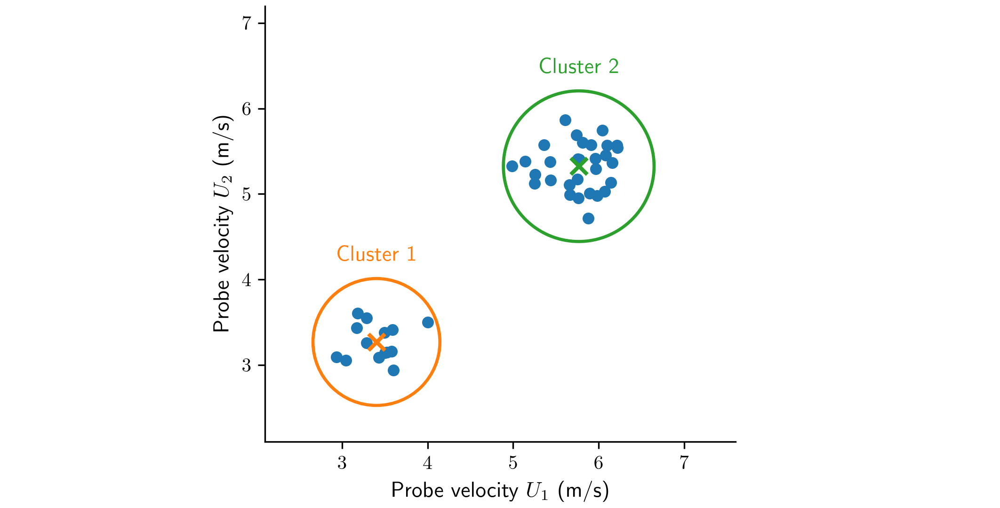
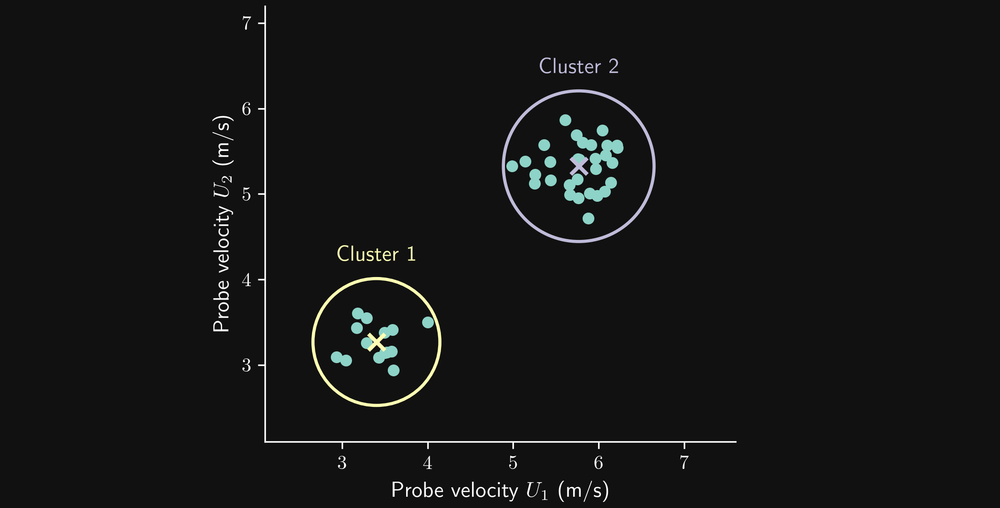
Each circular marker represents one sampling time. The crosses mark the cluster centers, and the enclosing circles indicate the groups of samples. These circles illustrate group membership rather than a learned decision boundary; the groups are not labels supplied before learning. Grouping snapshots can help us select representative states for closer analysis or build a reduced description of the flow.
A cluster does not automatically correspond to a distinct physical regime. Its interpretation depends on the chosen variables, their scaling, the similarity measure, and the clustering method. Two probes may also miss differences elsewhere in the flow, so we must check the interpretation against the associated flow fields.
Reinforcement learning
Reinforcement learning learns how to choose actions through interaction with an environment, using rewards to evaluate their consequences. The agent chooses actions according to a policy. The environment responds to an action and returns the next state and a reward. The aim is to improve the policy to maximize the expected cumulative reward.
Example: drag reduction with a rotating cylinder
Consider a cylinder that can rotate about its axis while fluid flows past it. We want to reduce its drag coefficient by controlling its rotation speed. A few pressure measurements in the cylinder’s wake provide the state used by the controller.
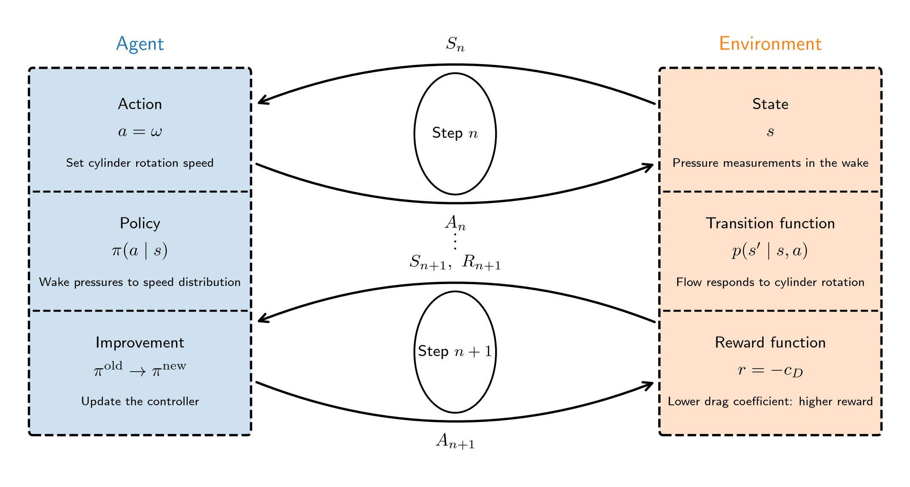
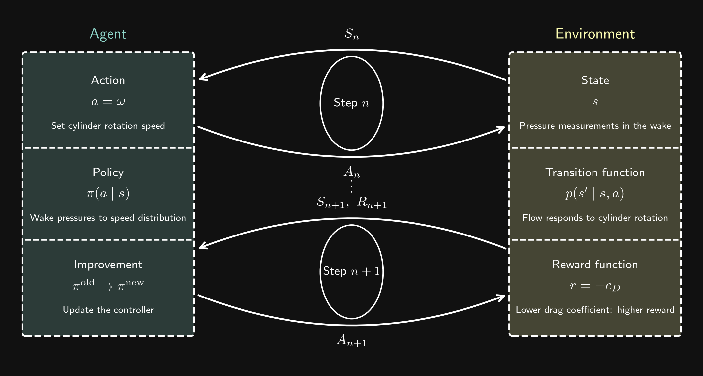
We use uppercase letters \(S_n\), \(A_n\), and \(R_{n+1}\) for random variables, and lowercase letters \(s_n\), \(a_n\), and \(r_{n+1}\) for their realized values. Accordingly, \(\pi(a\mid s)\) denotes the policy distribution evaluated at an action value \(a\) and a state value \(s\), while \(p(s'\mid s,a)\) describes the transition distribution for state values and an action value.
Strictly, we can distinguish the full physical state of the flow from the observations available to the controller. We will not make this distinction in this lecture: here, we use state for the pressure measurements supplied to the controller.
- The agent is the controller that selects the cylinder’s rotation speed. The action random variable \(A_n\) represents the angular velocity imposed at step \(n\); a realized action is \(a_n=\omega_n\).
- The state random variable \(S_n\) is a vector of pressure values measured at a few locations in the cylinder’s wake.
- The policy \(\pi(a\mid s)\) is the control law. It maps the pressure measurements to a probability distribution over rotation speeds, from which the controller selects an action.
- The state transition is the flow’s response to the rotating cylinder. In a simulation, the flow solver advances the solution under the imposed rotation speed and produces the pressure measurements that form the next state.
- The reward is based on the drag coefficient \(c_D\). The reward random variable is \(R_{n+1}\). For a realized drag coefficient, the reward value \(r_{n+1}=-c_{D,n+1}\) assigns a higher reward when the drag coefficient is lower. Maximizing cumulative reward then encourages drag reduction over successive control steps.
- During policy improvement, the learning algorithm uses collected pressure measurements, rotation speeds, and rewards to update the control law. Interaction supplies experience from which the controller can improve.
The reward expresses our chosen objective; it is not an intrinsic goal of the fluid. A practical control problem also specifies the allowed rotation speeds and may include the cost of rotating the cylinder in its objective.
Combining learning categories to solve real-world problems
Real-world problems often require several of the learning categories introduced above. A central challenge is to decompose a complex problem into subproblems that suitable methods can address.
Example: detecting anomalies in images of a process
Suppose we take images of an experimental or industrial process and want to detect when something goes wrong in the process chain. If we have examples labeled as normal or anomalous, we can pose this as a classification task. However, we may not want to classify the images directly in their full pixel space.
We can first use dimensionality reduction to obtain a compact representation of each image. The resulting coordinates are often called latent variables. A classifier then uses these variables to predict whether the process is behaving normally or showing an anomaly. This combines dimensionality reduction with classification.
If labeled anomalies are unavailable, we may instead learn a representation of normal behavior and detect departures from it. Anomaly detection therefore does not always require supervised classification. In either approach, the representation must retain the information that makes an anomaly detectable.
Example: reduced-order models of flows
A reduced-order flow model often combines dimensionality reduction with regression. First, we represent flow snapshots using a small number of latent variables. We can then fit a regression model that maps physical parameters to these variables, producing a parametric model. Alternatively, we can fit a model that predicts their future values from their current values or recent history, producing a model of the flow dynamics.
When needed, we reconstruct an approximate flow field from the predicted latent variables. The reduced representation and the predictive model work together: the first makes the problem smaller, while the second describes how the reduced variables depend on parameters or evolve over time.
Choosing methods for each subproblem
A workflow can combine more than two techniques, and not every subproblem requires machine learning. Classical numerical methods and analytical models can be combined with learned representations or predictors. For example, after reducing the dimensionality of a flow dataset, we might derive a simple analytical relationship in the latent coordinates and fit its remaining parameters to data, rather than train a more flexible learned predictor.
The important task is to identify which parts of the problem involve prediction, grouping, representation, or control, and then choose methods that suit each part. We must also check how the parts interact: information discarded in one step may be essential to a later step, and errors can propagate through the workflow.
Challenges encountered in machine learning
Machine learning can help us analyze data and build models, but a successful fit does not by itself establish that a model is useful or reliable. Several challenges arise throughout the workflow.
Obtaining suitable data
The data must contain information relevant to the question we want to answer. Measurements may contain noise, missing values, or systematic errors. Simulation data depend on the physical models, numerical resolution, boundary conditions, and convergence of the calculation. A model can learn these errors along with the relationships we intended it to learn.
Coverage matters too. A dataset collected at one Reynolds number or for one geometry may not support predictions under different conditions. More data are helpful when they add relevant information; collecting many nearly identical snapshots does not necessarily improve coverage.
Generalizing beyond the training examples
A model may reproduce its training data accurately but perform poorly on unseen examples. This is called overfitting. We therefore need validation and test data that reflect the intended application and are kept separate from model fitting.
In fluid mechanics, nearby snapshots from the same trajectory can be strongly correlated. Randomly distributing these snapshots across training and test sets may give an overly optimistic impression of performance. Depending on the task, a more meaningful check may hold out entire simulations, operating conditions, or time intervals. Preprocessing, including scaling and dimensionality reduction, must also be fitted using only the training data to avoid leaking information from the test set.
Interpolation and extrapolation pose different challenges. Good predictions within the sampled range do not establish that a model will remain reliable at unseen Reynolds numbers, geometries, or flow regimes.
Fitting and choosing models
Learning often requires optimizing many parameters. The optimization problem may be nonlinear or nonconvex, and its outcome can depend on initialization, variable scaling, and training settings. Model complexity must be appropriate for the available data and the task: a model that is too simple may miss relevant relationships, while an overly flexible model may fit noise.
We must also choose how to measure success. A small average prediction error can conceal large errors in rare but important events. For anomaly detection, for example, classifying every image as normal may appear accurate when anomalies are rare, while failing at the actual task.
Managing computational cost
Large flow datasets can exceed available memory or make repeated training and analysis expensive. Efficient data structures, selective storage, processing in batches, and parallel algorithms can help. The complete workflow matters: reading and transforming data may cost as much as fitting the model.
A learned model should also be evaluated under its intended operating conditions. A controller must produce actions quickly enough, and a model embedded in a flow solver must remain affordable when evaluated repeatedly.
Establishing physical reliability
A statistically accurate prediction need not satisfy conservation laws, boundary conditions, or other physical constraints. We need checks that are meaningful for the application, including simple cases, limiting behavior, and comparisons with independent data or methods.
Errors can also accumulate when a model predicts a trajectory over many time steps or interacts with a simulation or control loop. Evaluating isolated predictions is therefore insufficient for these applications; we must test the resulting dynamics and report where the model is reliable and what remains uncertain.
How to combine machine learning and fluid mechanics
Experiments and CFD simulations can both produce data and use models learned from data. The following workflows describe four common ways to connect them. The operations on the arrows are extract, learn, and use.
Extract data and learn models
We extract data from a CFD simulation or an experiment and learn models from those data. The models can provide predictions or representations that help us understand the flow.
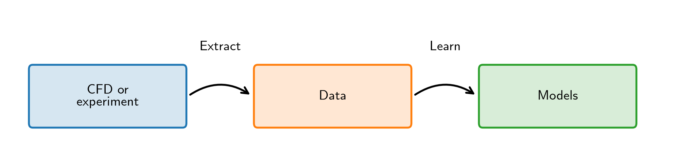
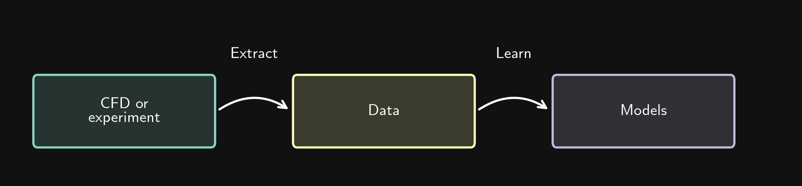
Examples include surrogate modeling, where a model predicts quantities such as forces from operating conditions, and flow analysis, where a learned representation helps identify coherent structures or recurring flow states.
Learn models and use them in CFD or experiments
We start with available data, learn models, and use those models in a CFD simulation or an experiment.
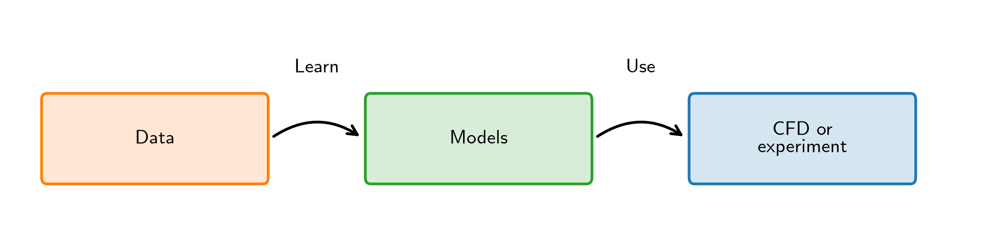
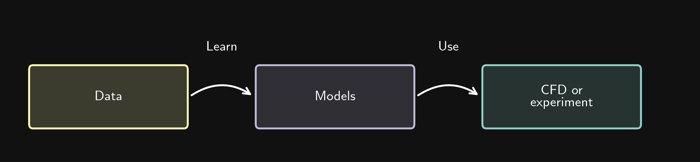
For example, experimental velocity measurements can provide data for a model of an inlet profile or its time dependence. We can then use this model as a more realistic boundary condition in a CFD simulation.
Other examples include material models, such as a relationship between temperature and viscosity, and closure models for turbulence or multiphase flow. In an experiment, a learned model may help prescribe operating conditions or settings based on measured data.
Combine workflows across scales or levels of complexity
The first two workflows can be combined and repeated. A CFD simulation or experiment of type 1 provides data from which we learn models. We then use those models in a simulation or experiment of type 2, extract new data, and continue the process.
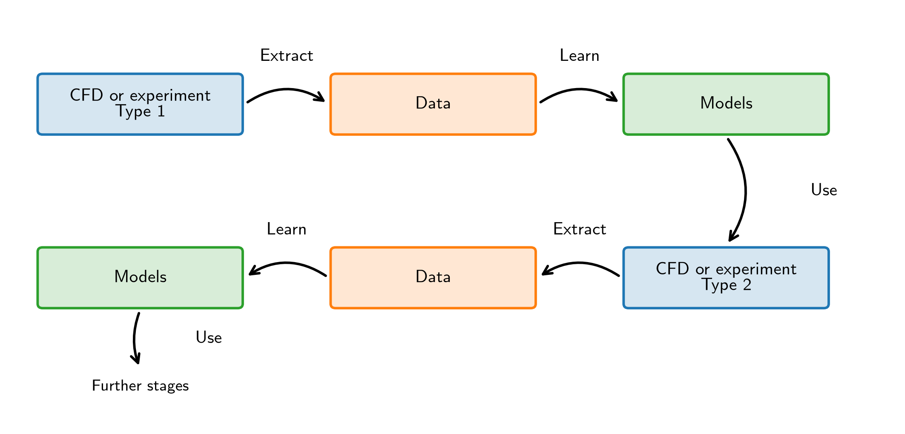
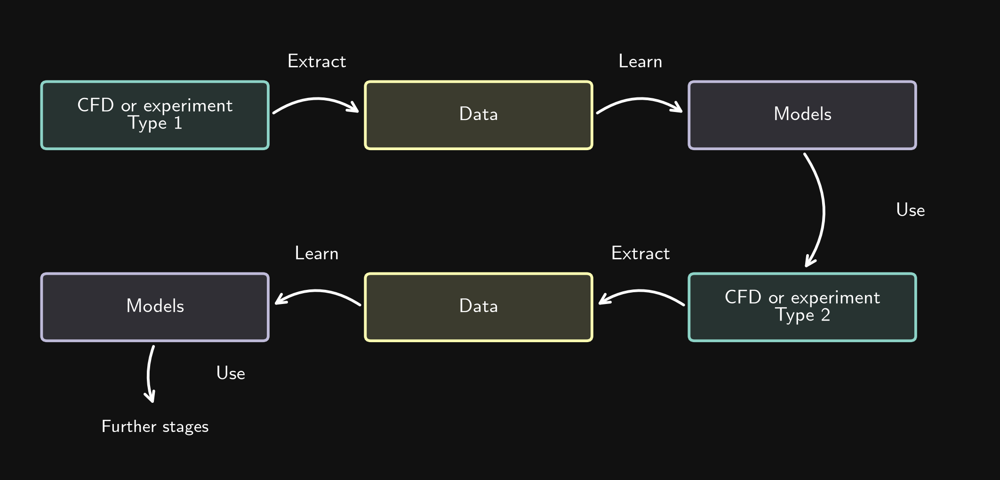
This is useful for modeling approaches that reduce the resolved range of scales or the complexity of the description. We first investigate small-scale phenomena in detail, then compress their behavior into models. A second investigation uses these models to account for small-scale effects without resolving all their details.
For example, a detailed investigation of mass transfer around individual bubbles can supply a closure model for a larger-scale multiphase-flow simulation. Further stages may replace individual bubbles with an averaged description of the mixture.
Close the loop
In a circular workflow, we extract data from a CFD simulation or an experiment, learn models, and use those models in the same system. Their use changes the system’s behavior, generating new data for the next learning step.
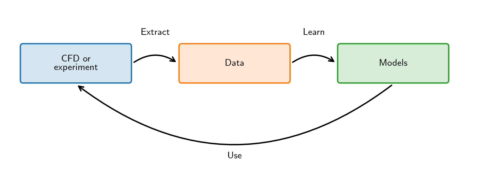
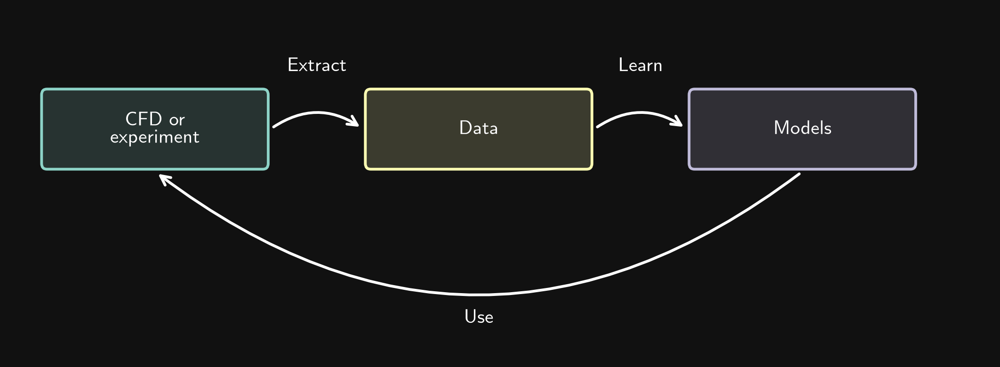
Examples include active flow control and parameter optimization. In rotating-cylinder control, pressure measurements and drag coefficients provide data for improving a policy. Applying the updated policy changes the cylinder’s rotation and the resulting flow, which produces new data. In parameter optimization, a learned model can guide the choice of the next operating parameters to evaluate.